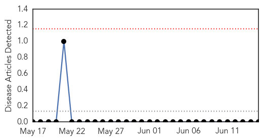
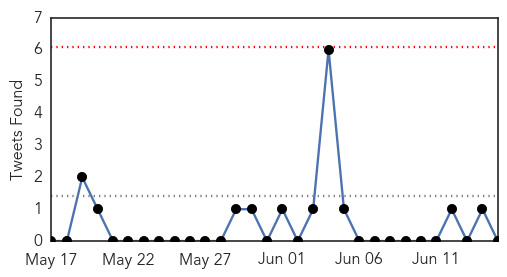
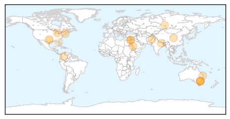

Hemmorhagic Fever
30-Day Web Trend
0 alerts, 0 warnings

30-Day Twitter Trend
0 alerts, 0 warnings

Article Locations

Article Confidences

Top Articles:
-
No articles found for Jun 15, 2014
Top Tweets:
-
No tweets found for Jun 15, 2014
Unknown
30-Day Web Trend
0 alerts, 0 warnings

30-Day Twitter Trend
0 alerts, 0 warnings

Article Locations
Article Confidences

Top Articles:
- 0.999
- Saudi MERS Response Hobbled By Institutional Failings
- 0.990
- Australian Defence Force Academy cadet diagnosed with meningococcal
- 0.989
- Meningococcal disease case at Australian Defence Force Academy
- 0.958
- New England braces for surge of ticks, threat of Lyme disease
- 0.953
- Diseases, Viruses & Parasites
- 0.917
- Chicago Tribune
- 0.901
- New vaccine available for deadly meningococcal
- 0.888
- Meningococcal threat brings new push for vaccinations
- 0.871
- AES cases put question mark over immunization claims
- 0.866
- Colombia's Zuluaga concedes defeat to Santos in presidential race
- 0.866
- Gunfire as Israeli troops surround house in flashpoint West Bank city
- 0.866
- Rosneft reports fatal fire at Achinsk oil refinery in Siberia
- 0.866
- Pakistan army launches "comprehensive operation" in North Waziristan
- 0.866
- Netanyahu says Hamas behind abduction of 3 Israeli teens -radio
- 0.854
- 3 health workers suspended in Tripura
- 0.781
- Sexually Transmitted Disease: HPV Is the Most Common
- 0.635
- Beef Recalled in Missouri
- 0.511
- Sherry Boas: Swimming in freshwater lakes is fun
Top Tweets:
-
No tweets found for Jun 15, 2014